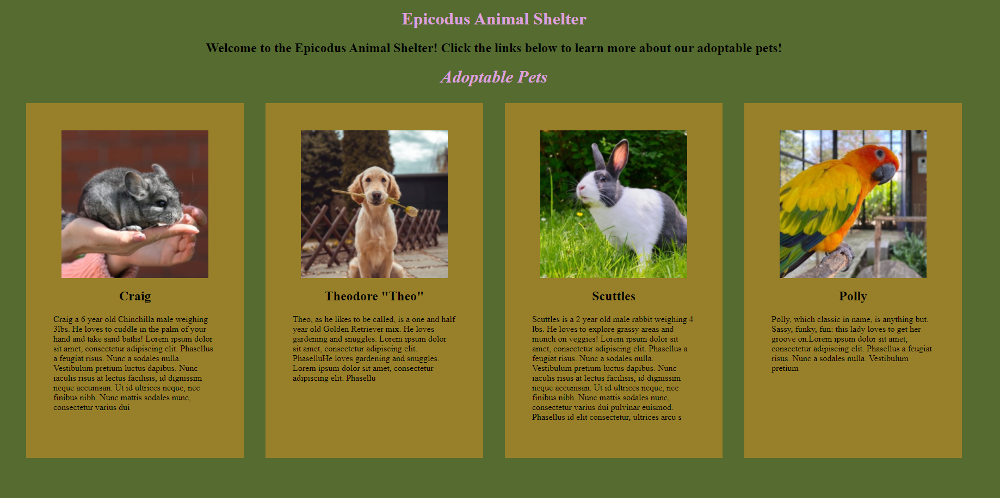
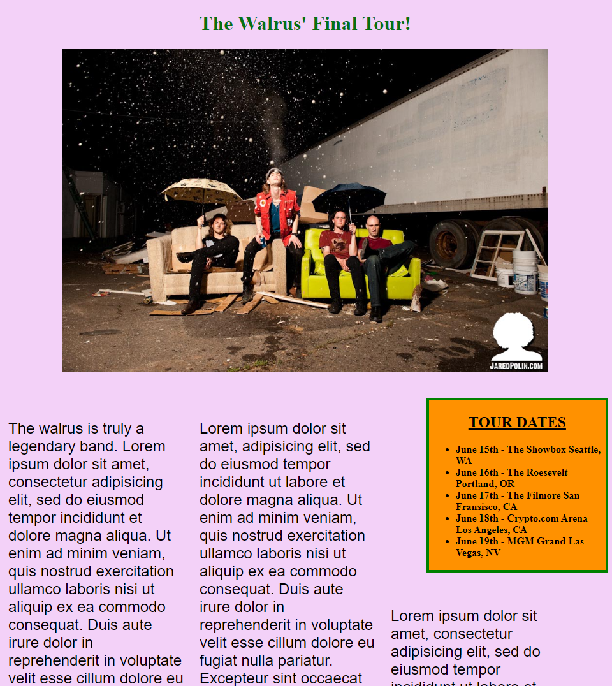
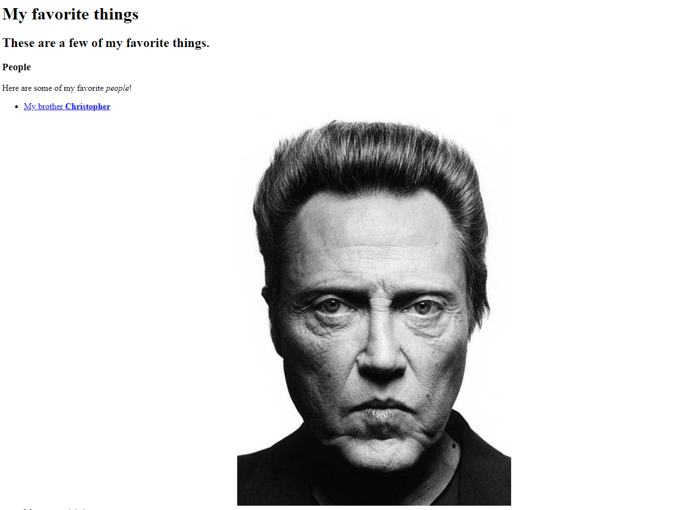
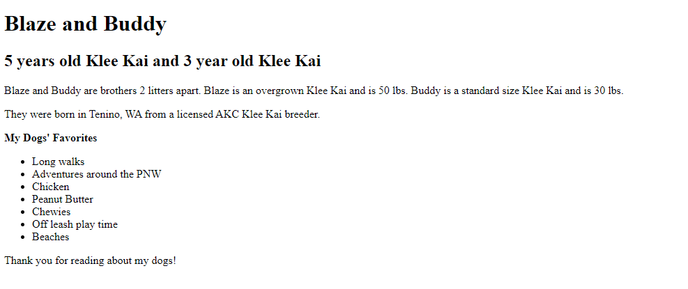

About Me
My previous career was making games as an Environment Artist. It was a lot of fun getting to 3D model worlds and props for players to explore. I graduated from FullSail University in 2002, with an Associates in Computer Animation.
I decided to make a career change and learn programming to try a different challenge and develop more logical thinking skills.
Current interests
- English Premier League
- Champions League
- Liverpool Football Club
- Music
- A good TV series or Anime series
- Gym Workout Routine
- Foodie Life
Hobbies
- Soccer
- Playing guitar and song writing
- Gaming
- Hiking
Skills
- Cooking
- Guitar
- Dog Dad
- 3D Modeling and Texturing
- HTML5
- CSS
- Javascript
Projects I've worked on during week one at Epicodus
Animal Shelter Website
This is a practice website with the goals of styling columns in CSS and learnomg the Box Model foundations in HTML
Contributers include: Sandra Tena, Ash Urban, Logan Jenkins, Joseph Jack, and Filmer Tolentino
Languages Used
- HTML5
- CSS
Band Website
This is a practice website with the goals of styling columns in CSS and learnomg the Box Model foundations in HTML
Contributers include: Logan Jenkins, Joseph Jack, and Filmer Tolentino
Languages Used
- HTML5
- CSS
My First Website
This is a practice website with the goal of learning HTML tags (ul, li, ol, and a), and including images.
Contributers include: Sandra Tena, Joseph Jack, and Filmer Tolentino
Languages Used
- HTML5
- CSS
Pet Profile Website
This is a practice website with the goal of learning basic HTML and inline style tags
Contributers include: Ash Urban and Filmer Tolentino
Languages Used
- HTML5
- CSS